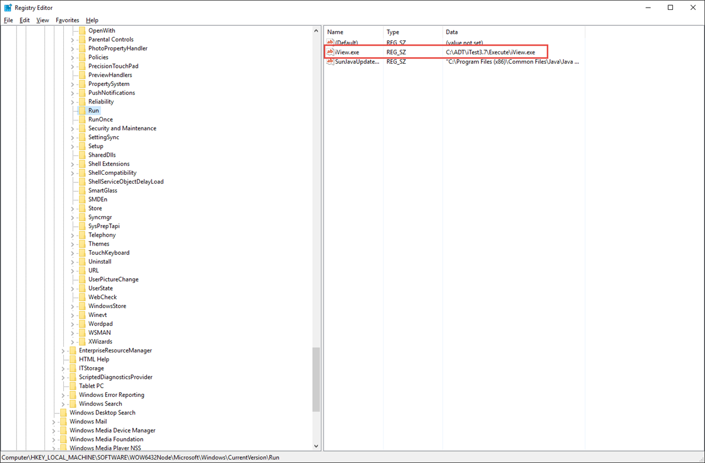

iTest User's Guide
Advanced Installations Guide
Product Version 4.5
Prepared By
ADT Software Engineering
A&D Confidential Document Distributable only to A&D Customers
Copyright A&D Company, Limited
A&D Technology Inc.
The following instructions describe the installation and upgrade process for PC-based iTest systems and will address most situations. For further information or assistance, please submit a support request using our customer portal at support.aanddtech.com.
The following configuration is recommended for an iTest Operator PC:
For the iTest real-time controller, the following configuration is recommended:
Additional Windows Requirements:
Two PC systems only:
 |
NOTE: | Only the GUI PC needs to be updated on upgrades after iTest version 3.2. |
|
NOTE: | The list below is intended as a quick overview. If more detail is required, please refer to the remainder of this document. |
As general good practice, make backups of the entire directory of previous iTest versions (including subdirectories) before installing iTest to the GUI PC.
To save a backup of the iTest folder, do the following:
To install iTest on a real-time PC, do the following:
| System Type | Description |
| iTest Services for INtime (2nd PC) | This type should be run on the 2nd PC of a 2-PC, INtime system. It essentially sets up a listen service under INtime so that the GUI PC can connect and configure it. |
|
NOTE: | iTest installation includes a 7 day trial license for the Offline Developer Suite. For further information, reference How to Use the Offline Developer Suite Trial License. |
This utility is first run after a new installation of most iTest installs. It can then be run manually at any time to change the global settings for the PC. SystemConfig is available in the Windows Start Menu.
SystemConfig
SystemConfig contains an editor for changing the following system settings. The majority of these settings are written to the Config.ini file which is located in the directory where iTest is installed. You can use SystemConfig to change the following settings:
SystemConfig Settings
| Setting | Description |
| iTest GUI Language | Use this combo box to change the preferred language for iTest. |
| Enable/Disable LabAgent on this machine | Enable/disable LabAgent. This setting is changed in the registry. Note: Your anti-virus may prohibit SystemConfig.exe from making this change. If it does, you will need to add an exception to your anti-virus for allowing SytemConfig.exe to change the start-up entries in your registry. LabCentral will not be able to communicate with your system if LabAgent is disabled. |
| LabAgent Port Number | By default, this is 80. It can be changed in this field. |
| Automated Patching Mode (and Patch folder) | Use these settings to set up a central location for patching iTest binaries (.exe, .dll, .tdaddin, and .ocx). Typically, this would be a LabCentral share name, but it can be any shared drive on your network. This feature allows you to put patches in one location on the network and patch all iTest systems. |
This next group of settings should only be changed if you do not have a LabCentral system. If you have LabCentral, changing these settings will overwrite your LabCentral settings and could possibly break your connection to LabCentral.
SystemConfig Settings
| Setting | Description |
| iTest Module file location | This gives you a network share to import and export modules to if you do not have LabCentral. |
| Enable iTest Security | Enables the login prompt for iTest Console and Test Manager. |
| Enable Windows Domain Logins | You can have iTest send the username and password to the Windows domain server to have the password verified. When using this feature, you still configure groups in the iTest security editor. However, when the user logs in with their domain username and password, the software checks to see what groups they belong to in the domain. If any of these groups match the iTest-configured groups, those groups define their security level. |
Prior to executing the silent installation, verify whether iTest is currently installed. This can be done by determining if the uninstall registry key, used by Windows to add and remove programs, exists on your system.
iTest registry key on a 64-bit Windows system:
HKEY_LOCAL_MACHINE\SOFTWARE\Wow6432Node\Microsoft\Windows\CurrentVersion\Uninstall\{XXXXXXXX-XXXX-XXXX-XXXX-XXXXXXXXXXXX}}_is1
iTest registry key on a 32-bit Windows system:
HKEY_LOCAL_MACHINE\SOFTWARE\Microsoft\Windows\CurrentVersion\Uninstall\{XXXXXXXX-XXXX-XXXX-XXXX-XXXXXXXXXXXX}}_is1
The iTest setup executable can be run in silent mode using the following command-line:
iTest38Setup.exe /VERYSILENT /SUPPRESSMSGBOXES
An install.ini file must be located in the same folder location in which iTest38Setup.exe is located, where the contents of the install.ini file include:
[Install] SerialNumber=xxxx-xxxx-xxxx-xxxx
Where xxxx-xxxx-xxxx-xxxx is replaced with the actual iTest installation key (serial number).
You may additionally add a command-line parameter to support the deviation from the default directory:
iTest38Setup.exe /VERYSILENT /SUPPRESSMSGBOXES /DIR=x:\dirName
Enabling LabAgent is done by running the registry key.
Example:
iTest registry key on a 64-bit Windows system:
HKEY_LOCAL_MACHINE\SOFTWARE\Wow6432Node\Microsoft\Windows\CurrentVersion\Run\iView.exe
Example:
iTest registry key on a 32-bit Windows system:
HKEY_LOCAL_MACHINE\SOFTWARE\Microsoft\Windows\CurrentVersion\Run\iView.exe
Where:
The value is "C:\ADT\iTestx.x\Execute\iView.exe" is displayed in the Registry Editor below:
Registry Editor

The following additional actions need to be taken upon completing any of the GUI PC iTest installations. These instructions do not need to be performed if you have just finished installing iTest on a two-PC (real-time) system.
Original: SystemDir=C:\ADT\iTest3.4\ Updated: SystemDir=C:\ADT\iTest3.8\
You can now begin using the iTest software.
|
NOTE: | If you are using drivers, insert your iTest dongle into a USB port before executing iTest. The iTest binaries (e.g., iTestConsole.exe and TestMgr.exe) will check for the presence of a dongle for certain drivers when they run. Refer to the Driver Licensing and Validation Tool section below for more information. |
When you install iTest, all available drivers are also installed. In order to use the drivers, you must have a valid security key enabled. The DongleUtil.exe utility shipped with your iTest software allows you to see which drivers you have valid access to. In addition, it also allows you to purchase additional security keys for drivers you need or will need in the future, as the test cell needs may expand. To see which drivers you have immediate access to, perform the following steps:
DongleUtil Columns
| Column | Description |
| Key | The identification number assigned to your dongle. |
| Product | The number assigned to the product. |
| Part Number | The part number of the product. |
| Feature | The ID assigned to the part number. |
| Driver Name | The name of the driver. |
| Description | The description of the driver. |
DongleUtil Buttons
| Button | Description |
| Refresh | Refreshes the list of available drivers. |
| Exit | Closes the application. |
| Launch ACC | Launches the admin control center in your web browser. From this web page, you can view license keys, products, features, diagnostic information, restrictions, and more. |
| Launch RUS | Launches the license management tool, which allows you to send key status information (as a .c2v file) and apply license updates (as .v2c and .h2r files) manually. This is used when you would like to purchase new products. |
| Blink | Causes the light to blink on the dongle. |
Supported users will be able to access an FTP site which may contain product fixes for their version of iTest. When these product fixes are available, they can be installed and their existing version of the application will be upgraded. In addition, the product fix installations are standalone patches, which do not require a full reinstallation of iTest.
Please refer to your Software Maintenance Agreement for more details on licensed software updates.
If you are uninstalling a version that you have already done a considerable amount of work on, save a backup copy first. Refer to the Backups section above.
To uninstall an existing version, complete the following procedure:
|
NOTE: | You may get a dialog box informing you that there are shared files that may be affected by removing this program. It’s always a good idea to click No to All just in case the files in question are referenced in another module of a program suite. |
When installing a new version of iTest, it is possible to use non-standard settings to retain your iTest installation on the RT PC.
On the GUI PC:
MappedRemoteDrive=X: setting (where X:_ can be any letter not in use).RemoteShareName=\\machine_name\share_name
For example, RemoteShareName=\\iTestPC\iTest3.x.
To switch between versions after installation, you must first perform the following: